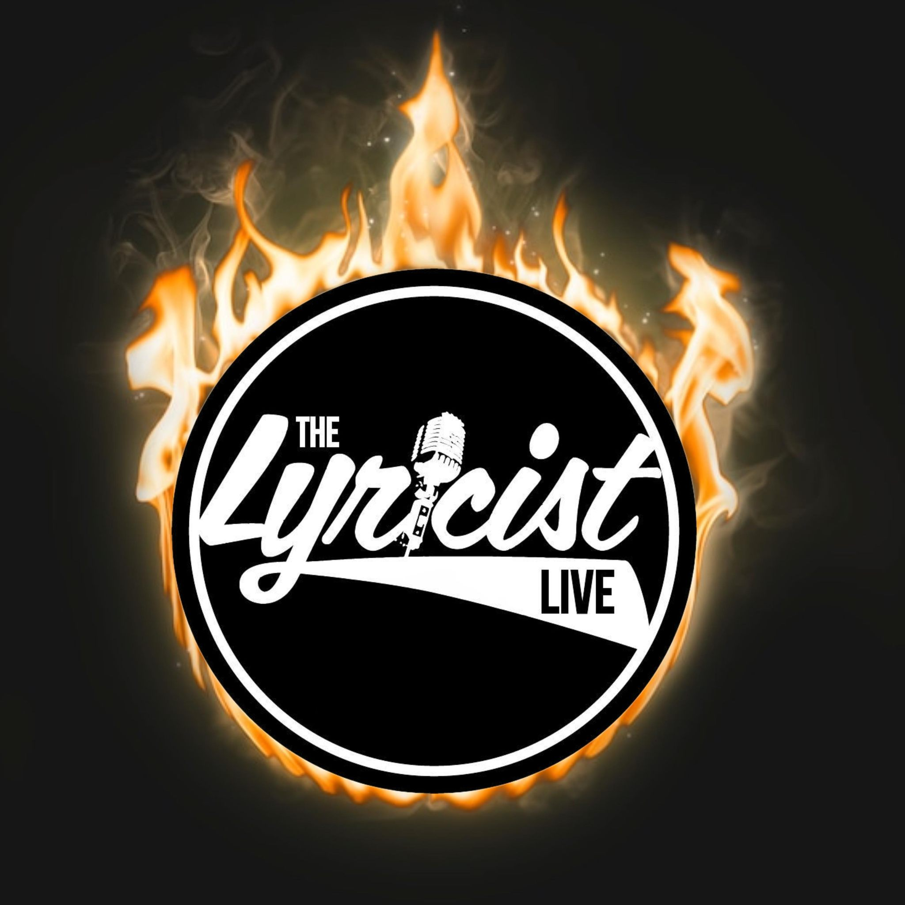

The Lyricist Live is an event held each month in downtown Jacksonville Florida, where local rappers come to rhyme over jazz beats at the Art Walk.
Freestyle is a style of hip hop where an artist writes an unreleased verse, with or without instrumental beats, in which lyrics are recited with no particular subject or structure. It is similar to other improvisational music, such as jazz, where a lead instrumentalist acts as an improviser with a supporting band providing a beat. Freestyle originally was simply verse that is free of style, written rhymes that do not follow a specific subject matter, or predetermined cadence. The newer style with the improvisation grew popular starting in the early 1990s. It is now mainly associated with hip hop.